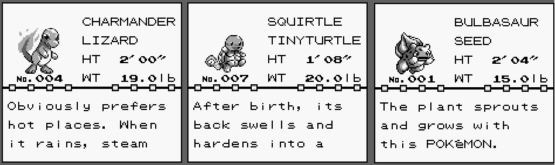
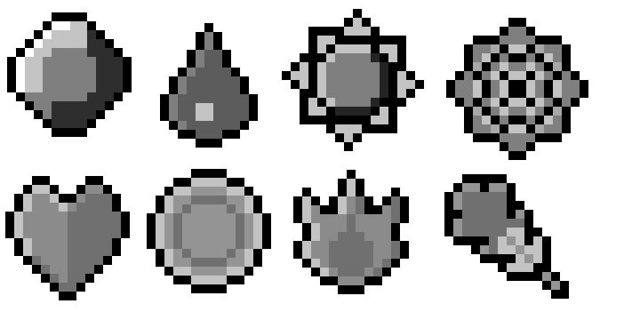
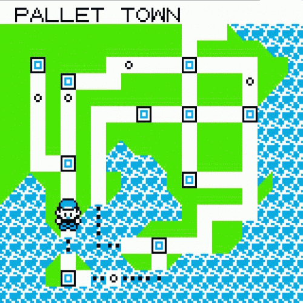
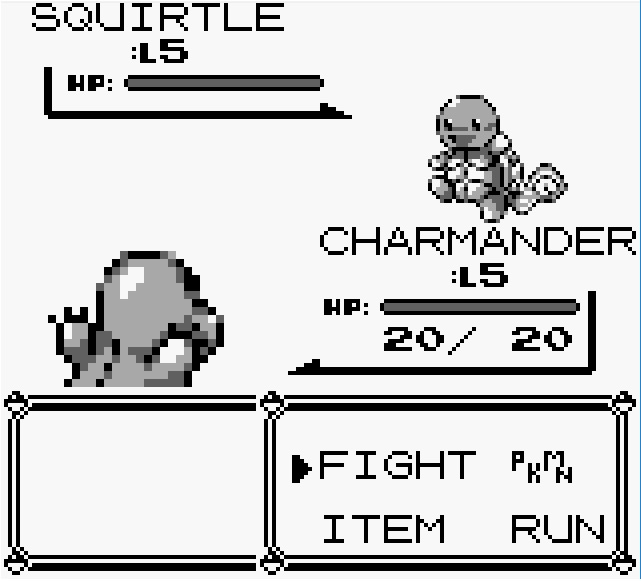

Pokemon Red/Blue/Yellow
Historia
O jogador começa em Cidade de Pallet, em Kanto e pode escolher entre um Charmander, Bulbasaur ou um Squirtle, recebido do Professor Carvalho, um cientista que estuda os Pokémon e entrega a novos treinadores um de seus Pokémon . Após essa escolha, o jogador não poderá conseguir os outros dois senão através de trocas. O objetivo básico é ser o melhor treinador de Kanto. Isso é possível através de treinar os Pokémon, derrotando líderes de ginásio para ganhar Insígnias e enfrentar a Elite 4 e o Campeão da Liga, conjunto dos cinco maiores treinadores do Continente.
Iniciais
Em todos os jogos de Pokemon o jogador tem a possibilidade de escolher entre 3 Pokemon inicial. Nesses jogos os iniciais são, Charmander(Fogo), Squirtle(Água), Bulbasaur(Grama).
Ginásios
No jogo, você pode enfrentar 8 lideres de Ginásio diferentes, ao ganhar do lider, você recebe a insignia daquele ginásio, ao coletar as 8 insignieas você ganha o direito de enfrentar a Elite 4.
Região
O jogo se passa na região de Kanto
Batalha
Nas batalhas presentes no jogo, são apresentadas 4 opções, Lutar, Troca de Pokemon, Utilizar um item e Correr o objetivo básico é utilizar as habilidades de seu Pokemon para derrotar o inimigo.